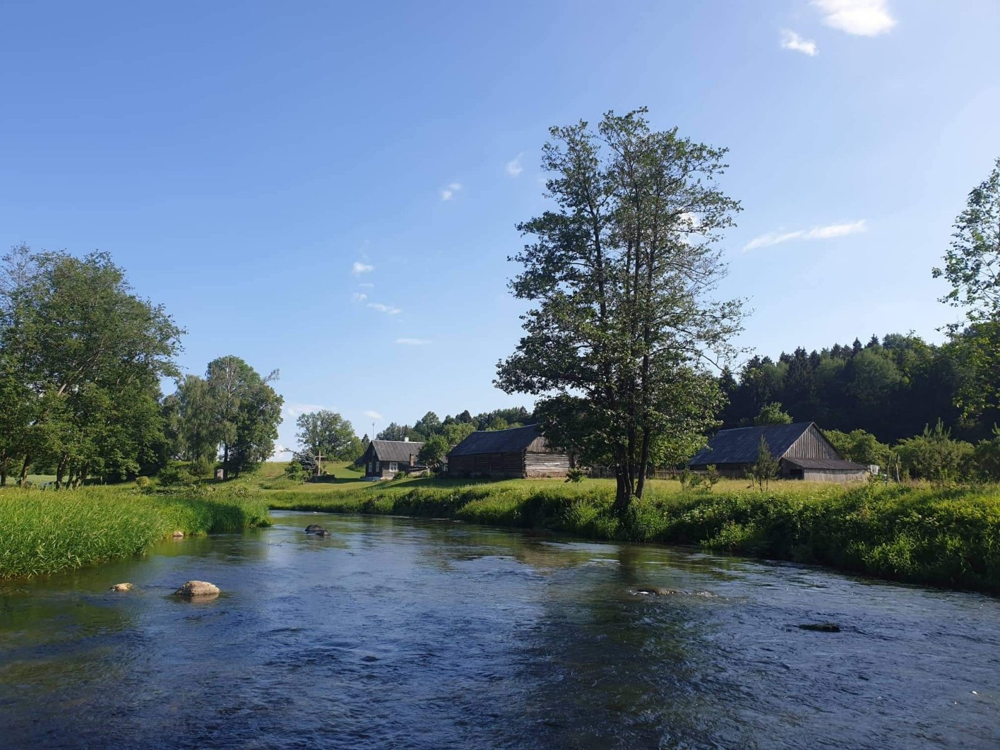

Welcome to vandens
ᐈ Vandens filtrai - LT AQUA - Vandens valymo įrengimai
2020.10.27 07:36
Skambinkite 860227144 Rašykite info@ltaqua.lt Klauskite Užklausa Toggle navigation Pradžia Apie mus Apie įmonę Komanda Karjera Padėka Klientai Didysis mėnesio žaidimas Vandens tyrimai Vandens tyrimai Vandens kokybė Vandens filtrai Filtrai namams Geriamojo vandens ruošimas Oro valymo sistemos Vandens Minkštinimas Vandens Nugeležinimas Mechaniniai vandens filtrai Anglies vandens filtrai Vandens filtrai namui Filtrai biurui Filtrai biurams Filtrai pramonei Pramonei UV filtrai Atbulinis osmosas Aptarnavimas Kontaktai
Vandens filtrai
Pradžia Vandens filtraiVandens filtrai
UAB “LT Aqua” galimybės, didesnės už lūkesčius. Vandens filtrai, jų parinkimas pagal kliento individualius poreikius bei aukšta atliekamų darbų kokybė. Šiuo principu vadovaujamės kiekvieną dieną tiek bendraujant su klientais, tiek atliekant darbus. Visada tęsiame duotus pažadus, nepaliekame nebaigtų darbų, nekeičiame sutartų kainų. Garantuojame, kad tik pas mus rasite geriausią kainos ir kokybės santykį, kvalifikuotus darbuotojus ir profesionalų bendravimą su klientais. Visada prisiimame atsakomybę už atliekamus darbus ir klientui nereikia papildomai mokėti už tai, apie ką nebuvo įspėtas. Projektus baigiame net esant nuostoliui, nes teigiama rekomendacija, tesėtas pažadas ir susitarimo laikymasis Mums yra didesnė vertybė už vienkartinį pelną. Turime didžiausią tinklą Baltijos šalyse, atliekame klientams garantinį ir pogarantinį vandens filtrų servisą . Tai užtikrina, kad kiekvienas gedimas ar klausimas bus išspręstas laiku. Renkantis vandens filtrus, kiekvienas pasirinkimas yra unikalus (tai priklauso nuo vandens tyrimo rezultatų, jie yra būtini norint tiksliai žinoti vandens kokybę). Taip pat kliento poreikiai yra skirtingi, dėl to vandens filtrų komplektavimas ir parinkimas yra skirtingas ir individualus kiekvienu atveju. Mūsų rekomendacija Jums, renkantis vandens filtrus ar ieškant optimaliausio vandens valymo sprendimo. Pirmas žingsnis ką turėtumėte padaryti, tai atlikti tikslius vandens tyrimus. Juos galite atlikti patys, nunešę savo naudojamą vandenį į artimiausią vandens tyrimų laboratoriją. Tai atlikti galime ir mes, taip taupydami Jūsų brangų laiką. Tiesiog paskambinkite mums ir mes atvyksime pas jus paimti reikalingo tyrimams vandens mėginio.Pagrindiniai vandens filtrai ir jų rūšys:
Vandens nugeležinimo filtrai
Vandens nugeležinimas dažniausiai naudojamas pašalinti geležies perviršį, esantį vandenyje. Tinkamai parinkti vandens nugeležinimo filtrai gali šalinti ne tik geležį iš vandens, bet ir puikiai pašalina mangano perviršį bei nemalonius kvapus, esančius vandenyje, kas vandeniui suteikia skaidrumo. Jeigu vanduo nėra bakteriologiškai užterštas, vandens valymas yra visiškai ekologiškas, vanduo yra oksiduojamas specialioje įkrovoje naudojant tik orą. Vėliau visi nešvarumai yra plaunami į vandentiekio kanalizaciją. Vandens nugeležinimo filtrai dažniausiai naudojami įsirengus nuosavą gręžinį arba esant labai geležingam vandentiekio vandeniui.Vandens minkštinimo filtrai
Vandens minkštinimo pagrindinė užduotis yra šalinti kalkes iš vandens. Bet modifikavus vandens filtrus, pagal atliktus vandens tyrimus , galima puikiai su minkštinimu iš vandens kartu su kalkėmis šalinti nitratus, manganą bei geležį. Žinoma, tai priklauso nuo vandens tyrimo rezultatų. Esant labai dideliems geležies, mangano kiekiams vandenyje, prieš vandens minkštinimo filtrą reikalingas vandens nugeležinimo filtras. Vandens minkštinimo filtrai prasiplovimui ir įkrovos atstatymui naudoja minkštinimo druską. Labai svarbu naudoti tinkamą minkštinimo druską, nes taip sutaupoma ne tik vandens, bet ir prailginamas eksploatacijos laikas.Mechaniniai vandens filtrai
Automatinio mechaninio vandens filtro pagrindinė funkcija yra sulaikyti mechanines priemaišas, tokias kaip purvas, rūdys, smėlis, smulkiosios dalelės, oksiduotos geležies dalelės, vandentiekio sistemos atplaišos. Šis vandens filtras dažniausiai montuojamas pirmajame etape. Nepriklausomai nuo turimos ar planuojamos įsigyti vandens filtravimo sistemos, rekomenduojame visada (išskyrus turint ar montuojant vandens nugeležinimo filtrą) įsirengti automatinį mechaninį vandens filtrą. Taip apsaugosite buitinę įrangą ir santechniką nuo mechaninių priemaišų. Investicija į šį filtrą, lyginant su paprastais kasetiniais filtrais, yra didesnė, bet ilguoju laikotarpiu tai atsiperka. Filtro veikimas visiškai automatinis. Filtras yra ekologiškas ir draugiškas aplinkai.
Angliniai vandens filtrai
Aktyvuota anglis yra labai stiprus absorbentas. Tai reiškia, kad anglis savo paviršiuje gali sulaikyti įvairius cheminius junginius, tokius kaip chloras ar ribotas arseno kiekis. Tokio filtro pagrindinė užduotis pagerinti vandens arogenines savybes, t.y. pagerinti vandens skonį, spalvą, kvapą. Taip pat aktyvuotos anglies filtras kartu veikia ir kaip mechaninis filtras, kuris gali sulaikyti mechanines priemaišas. Naudojant aktyvuotos anglies filtrus pagerinama vandens kokybė, o taip pat prailginamas naudojamos įrangos ilgaamžiškumas. Tokie vandens filtrai gali būti naudojami pramonei, vandens tiekimo įmonėse ar individualiuose namuose.
Pramoniniai atvirkštinės osmozės filtrai
Atbulinio osmoso filtrai, atvirkštinės osmozės filtrai arba nudruskinimo filtrai tai yra tas pats įrenginys, kuris vandens valymui, gėlinimui arba nudruskinimui naudoja specialią atbulinio osmoso membraną.Vandens filtravimas vyksta per filtruojančią membraną. Tai ypač smulkaus purėtumo filtras, osmozės proceso metu įvairūs teršalai, cheminės medžiagos, priemaišos sulaikomi vienoje filtruojamos membranos pusėje, o išvalytas vanduo prateka pro membraną.
Atbulinės osmozės filtrų veiksmingumas priklauso nuo vandens parametrų: pH lygio, cheminės sudėties, temperatūros, vandens sistemos slėgio, vandens kietumo. Atsižvelgiant į tiekiamo vandens kokybę prie atbulinės osmozės filtro gali būti projektuojamas vandens nugeležinimo filtras, vandens minkštinimo filtras arba automatinis mechaninis vandens filtras.
Šie vandens filtrai plačiai naudojami pramonėje, bet gali būti naudojami ir buityje, kur yra didelis vandens suvartojimas ir reikalingas aukštos kokybės vanduo. Pagrindinės pramonės sritys , kuriose naudojami pramoniniai atbulinio osmoso filtrai: farmacija, energetika, maisto bei chemijos pramonė.
Atbulinio osmoso filtrai
Šis vandens filtravimo principas yra naudojamas ruošiant geriamąjį vandenį. Šie vandens filtrai dažniausiai naudojami norinti pasigerinti vandens skonį, o taip pat esant labai dideliam vandens užterštumui: nitratais, nitritais, amoniu. Ši vandens valymo sistema geba iš vandens pašalinti sunkiuosius metalus, kalkes ar kitus teršalus. Geriamo vandens sistemos komplektuojamos su mineralizatoriais, kas leidžia turėti ne tik tinkamai valytą vandenį, bet ir praturtintą mineralinėmis medžiagomis. Jeigu abejojate savo vandens kokybe, garantuojame, kad naudojant šiuos filtrus Jūsų vanduo taps tinkamas net kūdikių maisto ruošimui.
© 2019 UAB "LT Aqua" Ukmergės g. 298A Vilnius, Tel.: 852313466, El. p.: info@ltaqua.lt
Sprendimas: Daisoras
Naudojame slapukus, kad Jums užtikrintumėme geriausią naršymo patirtį Mūsų internetinėje svetainėje.
Toliau naudodamiesi Ltaqua.lt internetine svetaine, jūs sutinkate su mūsų slapukais. Svetainės slapukų politka
Naudojame slapukus, kad Jums užtikrintumėme geriausią naršymo patirtį Mūsų internetinėje svetainėje.
Toliau naudodamiesi Ltaqua.lt internetine svetaine, jūs sutinkate su mūsų slapukais.
Strictly Necessary Cookie should be enabled at all times so that we can save your preferences for cookie settings.
Enable or Disable CookiesIf you disable this cookie, we will not be able to save your preferences. This means that every time you visit this website you will need to enable or disable cookies again.
Enable All Save Settings